51 33 ... Slightly Loosen Power Window Regulator to Remove Door Lock In Left or Right Front Door
51 33 ... Slightly loosen power window regulator to remove door lock in left or right front door
Special tools required:
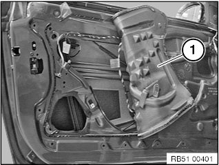
NOTE: To remove door lock, move rear section of sound insulation (1) toward center.
Necessary preliminary work:
- Partly remove sound insulation from front door.
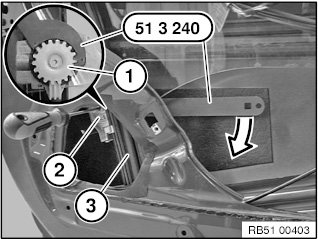
Lower power window regulator (3) as illustrated.
Disconnect plug connection to power window regulator.
Slacken off j-bolt (1) with special tool 51 3 240 on ring gear (2).
Tightening torque 51 32 1AZ.
Connect plug connection to power window regulator.
Move power window upward as far as it will go.
Disconnect plug connection to power window regulator.
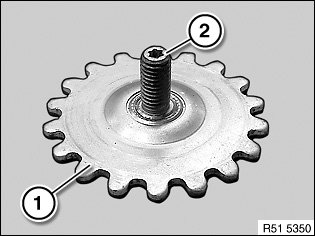
NOTE: Slacken off j-bolt on ring gear (1) until it can be easily twisted out at the inner star (2).
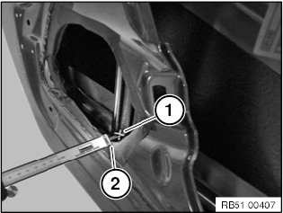
Mark measuring point on window lift rail (1) and inner door panel (2).
Determine distance between window lift rail (1) and inner door panel (2) and note down.
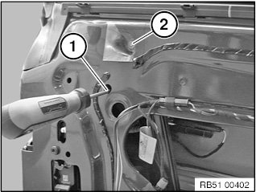
Slacken off j-bolt (1) at inner star.
Remove film and release nut (2) below it.
Tightening torque 51 33 1AZ.
Installation note:
Replace defective film if necessary.
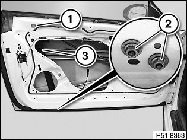
Unscrew nuts (2).
Tightening torque 51 33 1AZ.
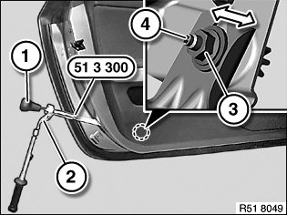
Slacken off nut (3) with reversible ratchet (2) of special tool 51 3 300.
Tightening torque 51 33 1AZ
Installation note:
Reset the distance you noted down by turning knob (1) on special tool 51 3 300.
Installation note:
Check distance between window lift rail (1) and inner door panel (2), repeat previous setting procedure if necessary.
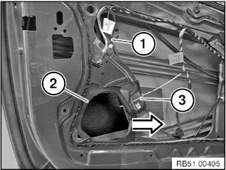
Pull bottom of rear guide rail (1) of power window regulator in direction of arrow until opening (2) in the inner door panel is clear.
Secure rear guide rail (1) to inner door panel with cable tie (3).
Mask off opening (2) in inner door panel with adhesive tape.
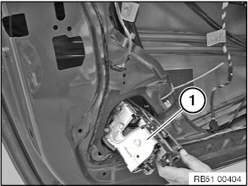
NOTE: Remove door lock (1) through opening in inner door panel.
IMPORTANT: Do not damage door lock seal when removing.
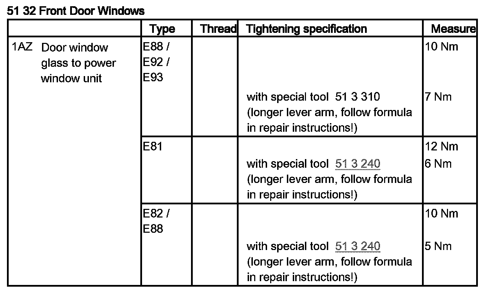
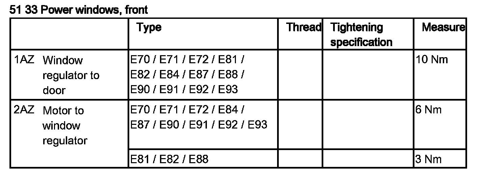